1020E10 oil seal cover (one) - l or r - on counter-rotating shafts - r + r and replace seals
- Path
- Procedures > 10 ENGINE > 1020 CRANKCASE SUMP AND COVERS > 1020E oil seals on counter-rotating shafts > 1020E10 oil seal cover (one) - l or r - on counter-rotating shafts - r + r and replace seals
- Kind
- repair procedure (removal / refitting; the operation number is the code)
- Applies to
- all engines; all production periods
- Interactive page
- https://sloeber94.github.io/elrnDB-a156/en/#/3237658
Applies to: all engines; all production periods
 Removing
Removing
 Refitting
RefittingPlace the car on the lifting bridge.
4450B10 Front WHEEL (one) - R.R.
7055B64 Engine compartment DUST shield in front wheel arch (one), left or right - R.R.
7055B54 under-engine guard - r r
1016A40 ignition coil cover on cylinder head- r+r
1016A20 single cam cover - r + r and replace gasket
1092G10 single engine belt r r
1092G20 engine component single belt fixed tensioner - one - r + r
1092A12 crankshaft pulley - r+r for versions with air conditioner
1032D12 timing system protective cover(s) - r + r
1092E10 counter-rotating shaft drive toothed belt - r + r
1092E24 counter-rotating shaft pulley - r + r with toothed belt removed
As to L-H oil seal cover - intake side act as follows:
1. Unscrew screws (1a) and displace power steering fluid reservoir (1b).
2. Unscrew screws (2a) and remove R-H side protection of timing belt (2b).
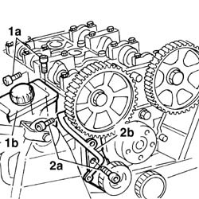
Applies to: all engines; all production periods
1. Unscrew screws (1a) and remove oil seal cover (1b) complete with oil seal.
Extract oil seal from seal cover.
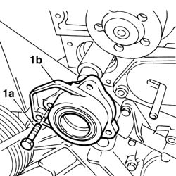
Applies to: all engines; all production periods
As to L-H oil seal cover- exhaust side act as follows:
1032C32 fixed timing system tensioner (one) r + r
1. Unscrew screws (1a) and remove oil seal cover (1b) complete with oil seal and timing mobile tensioner (1c).
Extract oil seal from seal cover.
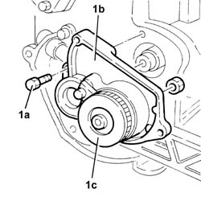
Applies to: all engines; all production periods
Refitting
RemovingAs to L-H oil seal cover - exhaust side act as follows:
1. Fit a new oil seal (1a) on oil seal cover by using tool (1b).
 | Name | Country |
|---|---|---|
1b | Fitting tool | 1.821.247.000 |
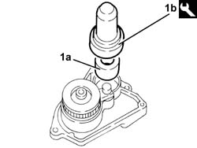
Applies to: all engines; all production periods
Fit oil seal cover complete with oil seal and timing mobile tensioner and fix it with its screws to the prescribed torque.
 | Fastening | Component | Ø | Value (daNm) |
|---|---|---|---|---|
- | Bolt | COUNTER ROTATING SHAFT FRONT COVER | M6 | 0.6 - 0.7 |
As to L-H — oil seal cover - intake side act as follows:
1. Fit a new oil seal (1a) on oil seal cover by using tool (1b).
| Name | Country |
|---|---|---|
1b | Fitting tool | 1.821.247.000 |
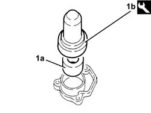
Applies to: all engines; all production periods
FIt oil seal cover complete with oil seal and fix it with its screws to the prescribed torque.
| Fastening | Component | Ø | Value (daNm) |
|---|---|---|---|---|
- | Bolt | COUNTER ROTATING SHAFT FRONT COVER | M6 | 0.6 - 0.7 |
Fit timing belt side protection and fix it with its screws.
Place power steering fluid reservoir back in its seating and fix it with its screws.
Applies to: all engines; all production periods
1092E24 counter-rotating shaft pulley - r + r with toothed belt removed
1092E10 counter-rotating shaft drive toothed belt - r + r
1032D12 timing system protective cover(s) - r + r
1092A12 crankshaft pulley - r+r for versions with air conditioner
1092G20 engine component single belt fixed tensioner - one - r + r
1092G10 single engine belt r r
1016A20 single cam cover - r + r and replace gasket
1016A40 ignition coil cover on cylinder head- r+r
7055B54 under-engine guard - r r
7055B64 Engine compartment DUST shield in front wheel arch (one), left or right - R.R.
4450B10 Front WHEEL (one) - R.R.
Take the car off the lifting bridge.
Applies to: engines: 2.0 JTS, 2.0 JTS; all production periods
Removing
RefittingPosition the vehicle on the ramp.
Ensure that the ignition key is in OFF position, then disconnect the negative battery terminal.
 | Name | Connector |
|---|---|---|
- | Battery |
Proceed with removal 4450B04 right front wheel r r .
Proceed with removal 7055B54 under-engine guard - r r .
Proceed with removal 1016A40 ignition coil cover on cylinder head- r+r .
Proceed with removal 1032B10 toothed timing belt - r + r for timing adjustment or replacement .
PROCEED AS FOLLOWS FOR THE LEFT COUNTER-BALANCE SHAFT COVER.
1. Undo the bolt (1a) for the left counter-balance shaft pulley using the tool (1b) for counter-torque.
| Name | Country |
|---|---|---|
1b | Counter-torque | 1.820.286.000 |
2. Remove the left counter-balance shaft pulley.
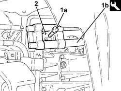
Applies to: engines: 2.0 JTS, 2.0 JTS; all production periods
1. Undo the bolt (1a) and remove the fixed timing belt tensioner (1b).
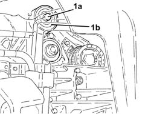
Applies to: engines: 2.0 JTS, 2.0 JTS; all production periods
1. Undo the nut (1a) and remove the counter-balance shaft drive belt tensioner (1b).
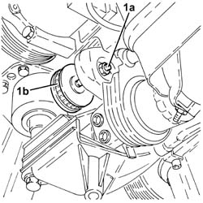
Applies to: engines: 2.0 JTS, 2.0 JTS; all production periods
1. Undo the bolts (1a) and remove the left counter-balance shaft cover (1b) complete with oil seal and O-Ring.
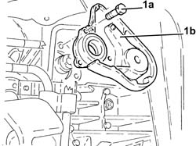
Applies to: engines: 2.0 JTS, 2.0 JTS; all production periods
At the bench, release the oil seal and the O-Ring from the left counter-balance shaft cover.
PROCEED AS FOLLOWS FOR THE RIGHT COUNTER-BALANCE SHAFT COVER.
1. Undo the nut (1a) and remove the timing drive belt moving tensioner (1b).
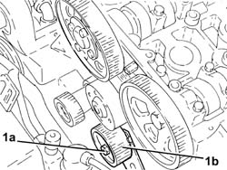
Applies to: engines: 2.0 JTS, 2.0 JTS; all production periods
1. Undo the bolt (1a) for the right counter-balance shaft pulley using the tool (1b) for counter-torque.
| Name | Country |
|---|---|---|
1b | Counter-torque | 1.820.286.000 |
2. Remove the right counter-balance shaft pulley.
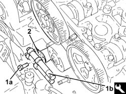
Applies to: engines: 2.0 JTS, 2.0 JTS; all production periods
1. Undo the bolts (1a) and remove the right counter-balance shaft cover (1b), complete with oil seal and O-Ring.
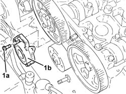
Applies to: engines: 2.0 JTS, 2.0 JTS; all production periods
At the bench, release the oil seal and the O-Ring from the right counter-balance shaft cover.
Applies to: engines: 2.0 JTS, 2.0 JTS; all production periods
Refitting
RemovingPROCEED AS FOLLOWS FOR THE RIGHT COUNTER-BALANCE SHAFT COVER.
Fit a new O-Ring in the housing on the right counter-balance shaft cover.
1. Fit a new oil seal (1a) in the housing on the right counter-balance shaft cover using the tool (1b).
| Name | Country |
|---|---|---|
1b | Fitting tool | 1.821.147.000 |
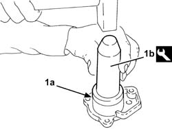
Applies to: engines: 2.0 JTS, 2.0 JTS; all production periods
1. Place the right counter-balance shaft cover (1a), complete with oil seal and O-Ring back in its housing, then secure it by tightening the bolts (1b) to the recommended torque.
| Fastening | Component | Ø | Value (daNm) |
|---|---|---|---|---|
1b | Bolt | COUNTER ROTATING SHAFT FRONT COVER | M6 | 0.8 ÷ 1.0 |
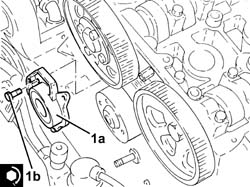
Applies to: engines: 2.0 JTS, 2.0 JTS; all production periods
1. Place the right counter-balance shaft pulley in its housing.
2. Tighten the bolt (2a) for the right counter-balance shaft pulley to the recommended torque using the tool (2b) for counter-torque.
| Fastening | Component | Ø | Value (daNm) |
|---|---|---|---|---|
2a | Bolt | COUNTER-ROTATING SHAFT PULLEY | M10 | (Counter balance shaft side) 4.5 ÷ 5.5 |
| Name | Country |
|---|---|---|
2b | Counter-torque | 1.820.286.000 |
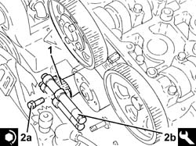
Applies to: engines: 2.0 JTS, 2.0 JTS; all production periods
Fit the timing belt mobile tensioner and fix it using the nut without tightening it.
PROCEED AS FOLLOWS FOR THE LEFT COUNTER-BALANCE SHAFT COVER.
Fit a new O-Ring in the housing on the left counter-balance shaft cover.
1. Fit a new oil seal (1a) in the housing on the left counter-balance shaft cover using the tool (1b).
| Name | Country |
|---|---|---|
1b | Fitting tool | 1.821.147.000 |
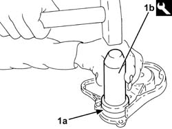
Applies to: engines: 2.0 JTS, 2.0 JTS; all production periods
1. Place the left counter-balance shaft cover (1a), complete with oil seal and O-Ring back in its housing, then secure it by tightening the bolts (1b) to the recommended torque.
| Fastening | Component | Ø | Value (daNm) |
|---|---|---|---|---|
1b | Bolt | COUNTER ROTATING SHAFT FRONT COVER | M6 | 0.8 ÷ 1.0 |
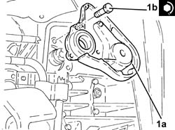
Applies to: engines: 2.0 JTS, 2.0 JTS; all production periods
Place the counter-balance shaft belt tensioner back in its housing and secure it without tightening the nut.
1. Place the timing fixed tensioner (1a) back in its housing and secure it by tightening the bolt (1b) to the recommended torque.
| Fastening | Component | Ø | Value (daNm) |
|---|---|---|---|---|
1b | Bolt | FIXED TENSIONER | M8 | 2.3 ÷ 2.8 |
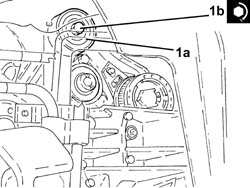
Applies to: engines: 2.0 JTS, 2.0 JTS; all production periods
1. Place the left counter-balance shaft pulley in its housing.
2. Tighten the bolt (2a) for the left counter-balance shaft pulley to the recommended torque using the tool (2b) for counter-torque.
| Fastening | Component | Ø | Value (daNm) |
|---|---|---|---|---|
2a | Bolt | COUNTER-ROTATING SHAFT PULLEY | M10 | (Counter balance shaft side) 4.5 ÷ 5.5 |
| Name | Country |
|---|---|---|
2b | Counter-torque | 1.820.286.000 |
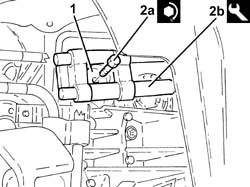
Applies to: engines: 2.0 JTS, 2.0 JTS; all production periods
PROCEED AS DESCRIBED BELOW FOR BOTH COUNTER-BALANCE SHAFT COVERS.
Proceed with refitting 1032B10 toothed timing belt - r + r for timing adjustment or replacement .
Proceed with refitting 1016A40 ignition coil cover on cylinder head- r+r .
Proceed with refitting 7055B54 under-engine guard - r r .
Proceed with refitting 4450B04 right front wheel r r .
Connect the negative (-) battery terminal.
Remove the car from the ramps.
Topics linked from this page (17)
- 1016A20 single cam cover - r + r and replace gasket
- 1016A40 ignition coil cover on cylinder head- r+r
- 1032B10 toothed timing belt - r + r for timing adjustment or replacement
- 1032B14 toothed timing belt - r + r for timing adjustment or replacement versions with air conditioner
- 1032C32 fixed timing system tensioner (one) r + r
- 1032D12 timing system protective cover(s) - r + r
- 1092A12 crankshaft pulley - r+r for versions with air conditioner
- 1092E10 counter-rotating shaft drive toothed belt - r + r
- 1092E24 counter-rotating shaft pulley - r + r with toothed belt removed
- 1092G10 single engine belt r r
- 1092G20 engine component single belt fixed tensioner - one - r + r
- 4450B04 right front wheel r r
- 4450B10 Front WHEEL (one) - R.R.
- 5510C14 ignition coil/s - r+r
- 7055B54 under-engine guard - r r
- 7055B64 Engine compartment DUST shield in front wheel arch (one), left or right - R.R.
- A1B Battery ( BATTERY NEGATIVE )